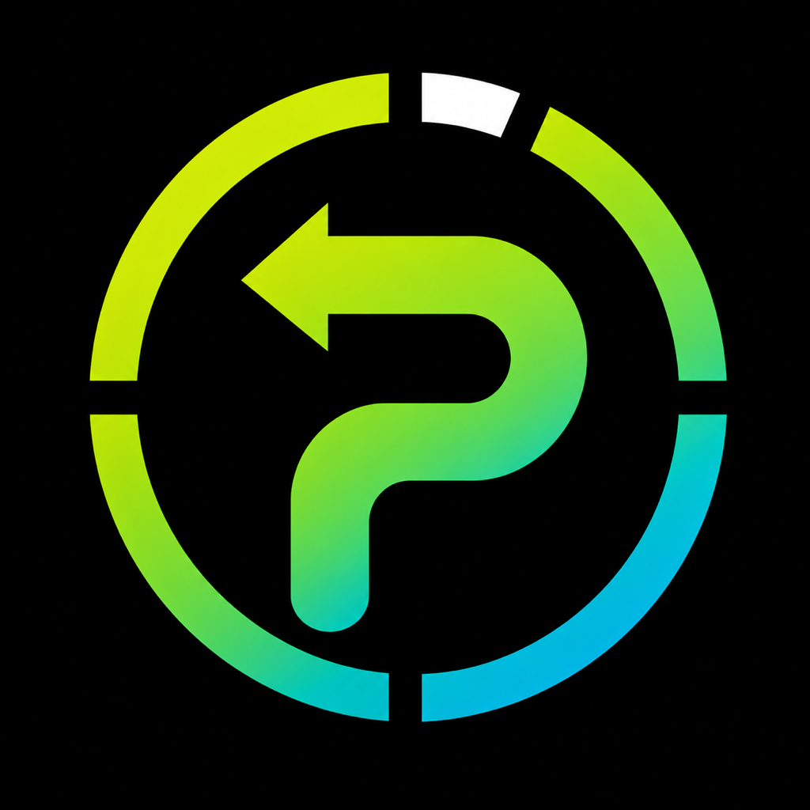
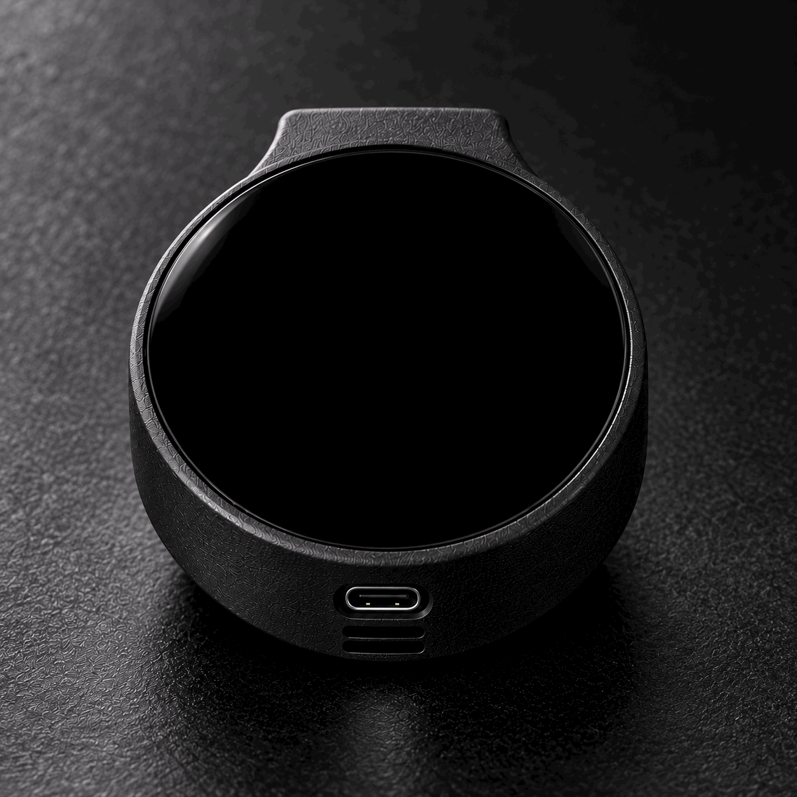
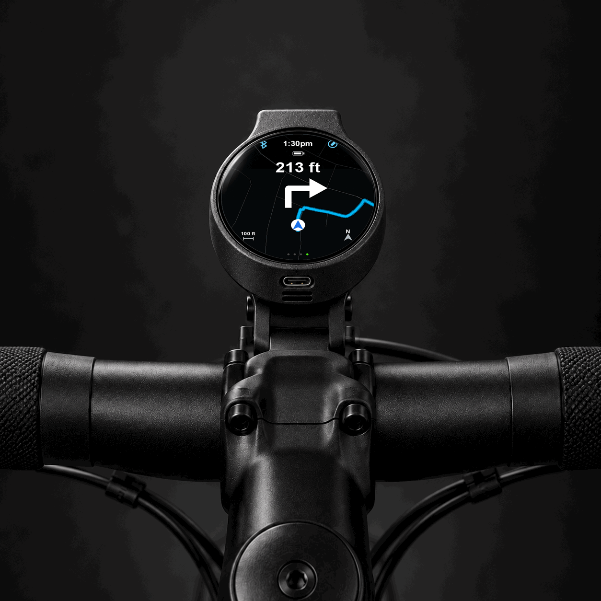

Ride data, at a glance.
Speed, distance, ride time, and navigation. The essentials at a glance.

PEDALONE Follow the journeyBUILT FOR THE RIDE. OPEN TO EVERYONE.
A compact GPS bike computer.
Full-color navigation. Phone-free.

01 — THE SPARK
The options felt like a compromise: affordable but clunky, or expensive with dated, rigid interfaces.
PedalOne started with a simple idea: clear screens, phone-free riding, and the freedom to make it your own—at a price more riders could reach.
02 — YOUR NEW CO-PILOT
Your route and ride data, right on your handlebars.

Full-color maps and turn-by-turn directions keep the next turn in view.
Built-in GPS lets the computer handle the ride. No phone required on the handlebars.
Customize your ride screens to put the metrics that matter to you front and center.
Speed, distance, ride time, and navigation. The essentials at a glance.
Ride with the computer alone, or connect to the iOS companion app.
Open-source PedalOS. Build your own, start with a partial kit, or choose a fully assembled device.
No premium budget—or electronics skills—required.
Hardware options in development.
03 — HOWEVER YOU ROLL
Explore new routes without relying on your phone.
Navigation and ride data at a price more of your crew can reach.
Their own navigation and ride data. No smartphone required.
04 — IN DEVELOPMENT
In development, with more to explore.
ON THE ROADMAP PLANNED · NOT LAUNCH PROMISES
Exploring new ways to stay connected with your crew.
Cycling radar support for on-screen awareness.
Features, compatibility, pricing, and availability are subject to change. No release date announced.
Interested in PedalOne? Sign up for development and launch updates.
Tell us how to make your ride better.
@pedal.one